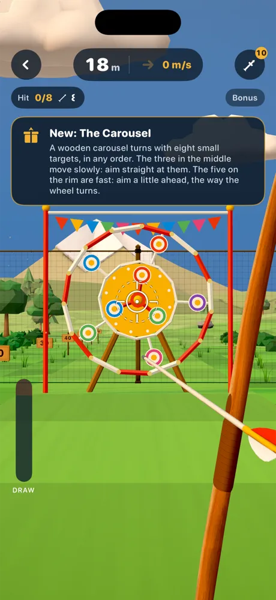
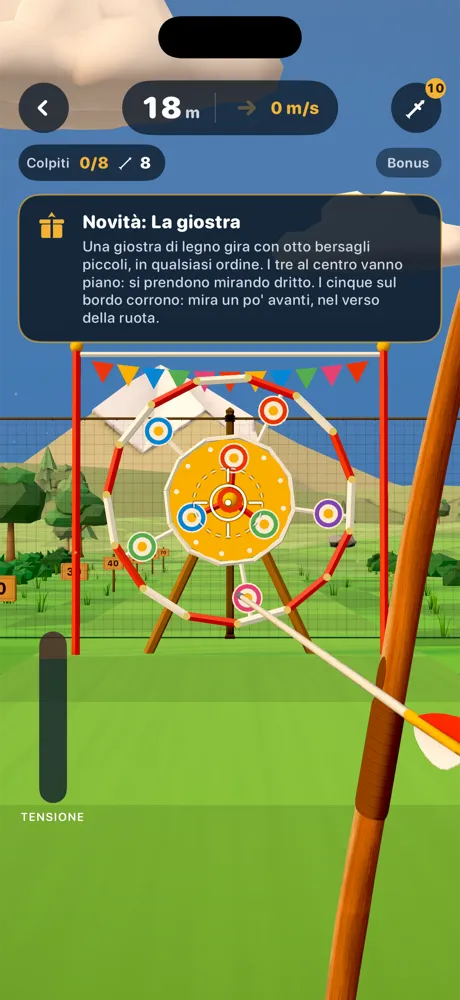
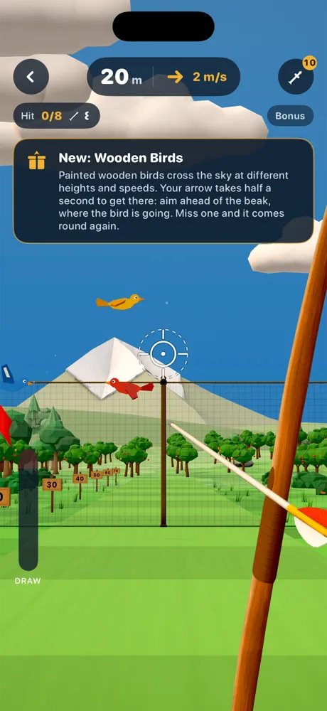
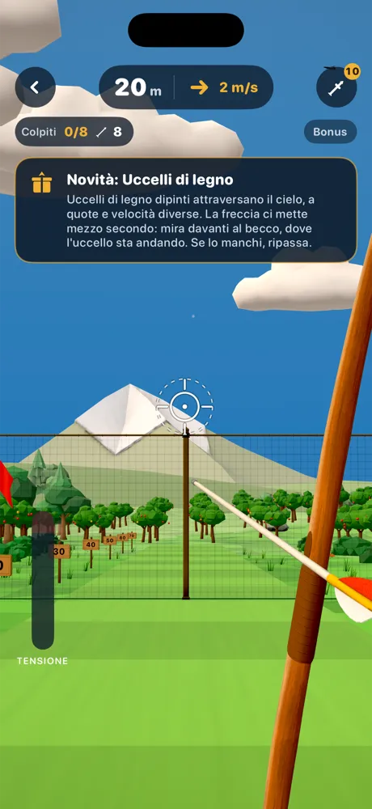
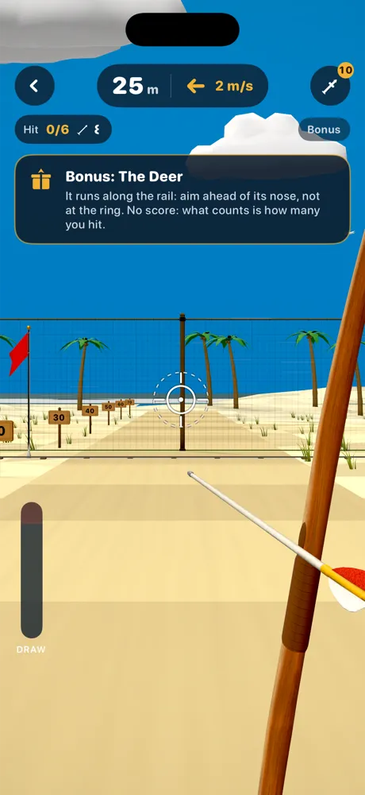
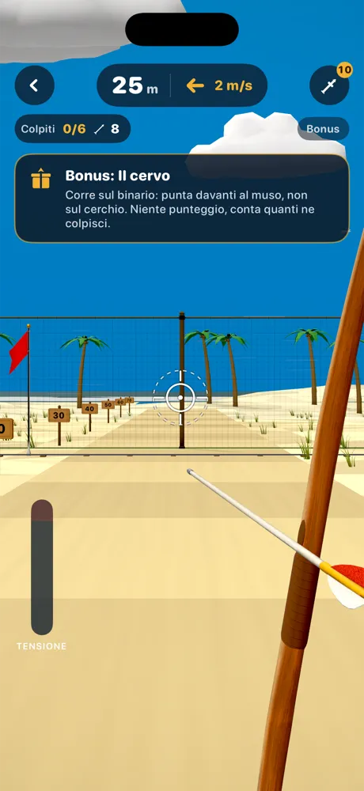

Bonus stagesLivelli bonus
Targets that moveBersagli che si muovono
Between levels the target gives way to balloons rising in the wind, clays thrown across the sky, swinging apples, a fairground carousel, wooden birds and a deer running on its rail. Only hits count: lead your shot.Tra un livello e l'altro il bersaglio lascia il posto a palloncini che salgono nel vento, piattelli lanciati in cielo, mele che dondolano, una giostra da fiera, uccelli di legno e un cervo che corre sul binario. Contano solo i colpiti: anticipa il tiro.





